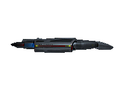

Bridge
The bridge is the starship equivalent of an operations center or command center. The bridge layout of the Defiant-class is compact, but nonetheless accommodate the familiar engineering, tactical, science, conn, and ops stations. The bridge module is sunken into a much larger deck 1 than on most Federation starships to provide added protection during combat situations.
Main Engineering
Engineering, or main engineering is the location from which the ship's main power systems are controlled. Engineering is the primary assignment of engineers and chief engineers. Engineering can also be used as a command and control center, overriding primary centers such as the bridge or auxiliary control.
Transporter Bay
The transporter bay is a part of the Defiant specially outfitted to transport lifeforms and small, inanimate objects. This room included a transporter chamber with a transporter platform.
Launch Bay
The launch bay (variously called the flight deck, hangar deck, or shuttlecraft bay) is the facility on a starship where shuttlecraft were launched, received, stored, and maintained. Due to their compact size, the Defiant-class utilizes a launch bay, instead of the larger shuttlebays used on other Starfleet ships of the late 24th century. The USS Defiant's launch bay is used by Type 18 shuttlepods and Type-10 shuttlepods, such as the Chaffee (seen here).
Sickbay
On Defiant-class ships, sickbay is on Deck 2. Sickbay is spartan and usually staffed with a single physician or medic. The room is equipped with limited surgical facilities and is primarily intended to stabilize patients until they can be delivered to a nearby friendly starbase medical facility.
Mess Hall

The mess hall is the location on Federation starships or starbases where crewmembers can relax and enjoy a meal or a quick snack in a social setting. It is also the place where officials, such as ambassadors of other worlds, are entertained, gatherings are also held here. Like much of the internal spaces aboard Defiant-class starships, the mess hall is compact, functional and has no windows. It is equipped with one food replicator. The mess hall can also be used for meetings with the ship's crew.
Crew Quarters
Due to the limited space available on board vessels of the Defiant-class, all crew members have to share their quarters with at least one other crewmate during normal times of operation – with the exception of the vessel's commanding officer, who is granted a separate room on Deck 1, which double as the captain's ready room. Crew accommodations included twenty-two main cabins and ten contingency cabins, each equipped with a minimum of two bunks. These cabins are outfitted with as many as six bunks, allowing for a potential total crew of 192. Each cabin is equipped with one replicator port and one standard computer terminal. Overall, crew quarters on board Defiant-class vessels are the most spartan in Starfleet.